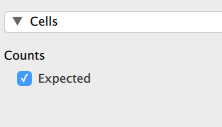

Next: メタ分析 Up: JASPについて Previous: 尺度の信頼性
下の表は、80人の生徒に対して理科のうち好きな科目を択一で選択させた結果を示したものである。 このデータをもとに、物理・化学・生物・地学で人気に違いがあるか検証したいとする。
ここでは、以下のデータファイル science.csv を用いて分析することにする。 （http://www.juen.ac.jp/lab/okumura/jasp/science.csv からダウンロード可能。） 変数 Science に各科目（physics, chemistry, biology, geology）が、Counts にそれを選択した人数が格納されている。
JASP でこのデータを開き、分析メニューで [Frequencies] [Multinomial Test] へと進む。
分析画面で Science を [Factor] へ、Counts を [Counts] へ移動させると、カイ2乗検定の結果が表示される。
ここでは、検定結果は有意（ , ）となっており、同じ理科でも科目により人気に違いが見られるという結果になる。 [Additional Statisitics] で [Descriptives] にチェックを入れておくと、観測度数と帰無仮説の下での期待度数が表示される。
下の表は、ある主張に対する意見（賛成・反対・中立）について、性別（男子・女子）ごとに人数を集計したものである。 このクロス集計表をもとに、性別と意見の間にどのような連関があるか検証したいとする。
分析をするにあたって、ここでは2つのデータの入力形式を紹介しておく。 1つ目は、次のように性別（Gender）と意見（Opinion）の各組み合わせについて、該当する人数（Counts）を入力するというものである。 このデータは、opinion1.csv として http://www.juen.ac.jp/lab/okumura/jasp/opinion1.csv からダウンロード可能である。
このデータを JASP で読み込み、分析メニューで [Frequencies] [Contingency Tables] へと進む。
分析画面で性別（Gender）を [Rows] へ、意見（Opinion）を [Columns] へ、人数（Counts）を [Counts] へ移動させると、下のようにクロス集計表が表示され、カイ2乗検定の結果が示される（ , ）。
また、[Statistics] メニューを開き、[Phi and Cramer's V] にチェックを入れると、クラメルの連関係数 の値が表示される（）16。
[Cells] メニューで [Expected] にチェックを入れると、クロス集計表に期待度数（"Expected count"）が合わせて表示される。 クロス集計表の検定におけるカイ2乗統計量は、データとして得られた観測度数とこの期待度数との離れ具合を数値化したものと言える。

2つ目は、次のように各生徒（Id）の性別（Gender）と意見（Opinion）について、その具体的な値を1行ずつ入力するというものである。 このデータは、opinion2.csv として http://www.juen.ac.jp/lab/okumura/jasp/opinion2.csv からダウンロード可能である。
分析の仕方は先ほどと同様である。 データを JASP で読み込み、分析メニューで [Frequencies] [Contingency Tables] へと進む。
分析画面で性別（Gender）を [Rows] へ、意見（Opinion）を [Columns] へ移動させると、先ほどと同じ結果が表示される。
Taichi Okumura